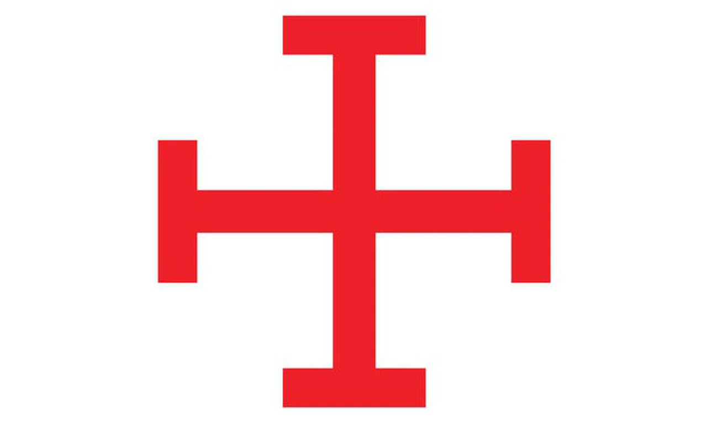
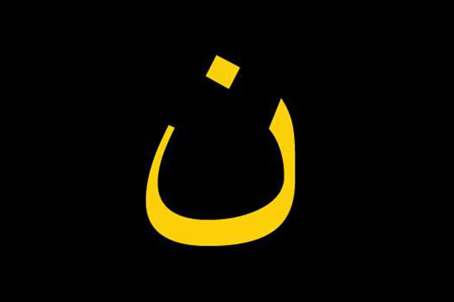

The term "hate speech" is used often, but the definition is not always clear.
In our cursory investigation of hate speech laws in various countries, we found that most countries do not appear to have particularly well-crafted or strong laws against hate speech. We also found few examples of laws that distinguish between speech that is simply insulting or offensive and speech that is intended to foment hatred against a particular group, or to inspire action.
Australia has no national law on the subject, but local jurisdictions have laws against "victimising" people based on color, ethnicity, national origin, or race; some jurisdictions cover disability, gender identity, HIV/AIDS status, or sexual orientation. Algeria prohibits any form of expression that incites racial hatred or "humiliation, hostility, or violence" on the basis of race, religion, ethnicity, national origin, sex, disability, or health status. Belgium has a law against racist speech, as well as a specific statute forbidding Holocaust denial. Brazil's law prohibits racism, but does not mention hate speech in general. In Canada, advocating genocide against a particular group is a crime. Denmark prohibits speech that threatens, insults, or degrades a target group. In our view, threatening is qualitatively different from insulting or degrading a target group.
There are many more examples like those, which either omit specific mention of inciting violence, or conflate non-violent disagreeable speech and truly dangerous speech. It was interesting to us to learn how little focused attention has been given to this topic in various national governments, in view of the amount of public discourse there has been about it.
The majority of countries that are officially Islamic have laws in place that forbid "insulting Islam." Some also prohibit hate speech against the usual groups - ethnic/national origin, disability, race, religion, sexual orientation, skin color. In our system, insulting a religion falls into the category of disagreeable speech, but is not legally actionable unless the speech appears to be intended to motivate hateful action.
In summary, we found that national laws against hate speech have resulted from the history of racism and other violence as experienced in each country. No country has general laws about hate speech that we consider useful, with the exceptions of the United States and India.
According to The Law Dictionary, "While much ado is often made about so-called 'hate speech', no satisfactory definition for this type of speech exists within the confines of the law. Not to be confused with 'hate crimes,' a person's speech does not affect another person's physical condition or personal property and is, therefore, not punishable by law."
Note: In our view, the phrase "a person's speech does not affect another person's physical condition or personal property" is key. Consistent with our views on Crime and Punishment and on Choices and Consequences, a crime is committed when harm is done. While one could argue that offensive speech causes emotional harm, that is not the intent of our notion of "harm" in the context of crime.
But a person's speech can lead to physical actions. According to The First Amendment Encyclopedia, Supreme Court case R.A.V. v. St. Paul (1992) "involved a city ordinance in St. Paul, Minnesota, prohibiting bias-motivated disorderly conduct against others on the basis of race, color, creed, religion, or gender. The Court struck down the ordinance, finding it to be unconstitutional on its face because it was viewpoint discriminatory.
"The Court reviewed whether hate speech as defined in the ordinance fit into the 'fighting words' category. This category, first established in Chaplinsky v. New Hampshire (1942), was defined as 'such words, as ordinary men know, are likely to cause a fight.'"
From the same source: "Virginia v. Black (2003) concerned the constitutionality of a Virginia statute that made it unlawful to burn a cross with the intent of intimidating any person or group of persons. Many scholars have argued that the Court’s opinion in Black is completely opposite from its ruling in R.A.V.
"Relying on the history of the use of cross burnings to intimidate African Americans, the plurality found that R.A.V. did not mean 'the First Amendment prohibits all forms of content-based discrimination within a proscribable area of speech.' The Court did accept the idea that some individuals might burn crosses for reasons other than intimidation."
Note: The idea that some individuals might burn crosses for other reasons does not ring true to us. Crosses are used symbolically in a variety of contexts, both religious (Christianity) and secular (medical services), but the act of burning a cross really has just one intent - to intimidate black people. However, many hate groups have borrowed or adapted symbols that had an earlier, benign history. For example, the swastika is usually associated with Nazism in Western countries due to its use by the German Nazis in the 1930s-40s; but the symbol has a longer history, and has been used without any sinister intent by various east European and Asian cultures for centuries. To us, this means context and intent are important, and must be considered along with the symbol itself.
The Wikipedia article on hate speech laws includes this summary of German law:
"Volksverhetzung ('incitement to hatred') is a punishable offense under Section 130 of the Strafgesetzbuch (Germany's criminal code) and can lead to up to five years' imprisonment. Section 130 makes it a crime to publicly incite hatred against parts of the population or to call for violent or arbitrary measures against them or to insult, maliciously slur or defame them in a manner violating their (constitutionally protected) human dignity. Thus for instance it is illegal to publicly call certain ethnic groups 'maggots' or 'freeloaders'. Volksverhetzung is punishable in Germany even if committed abroad and even if committed by non-German citizens, if only the incitement of hatred takes effect within German territory, e.g., the seditious sentiment was expressed in German writing or speech and made accessible in Germany (German criminal code's Principle of Ubiquity, Section 9 §1 Alt. 3 and 4 of the Strafgesetzbuch).
"On June 30, 2017, Germany approved a bill criminalizing hate speech on social media sites. Among criminalizing hate speech, the law states that social networking sites may be fined up to €50 million (US$56 million) if they persistently fail to remove illegal content within a week, including defamatory 'fake news'."
Note: In our view, the German law is overreaching (Germany has no juridiction in other countries) and conflates two kinds of "harm," treating the lesser kind of harm (disagreeable speech) just as harshly as the greater kind (incitement to hateful action).
In our system, disagreeable speech is not a crime at all, while incitement to violence and intentional disinformation/propaganda may be prosecuted as stochastic terrorism - far more serious than a violation of the German law. It is necessary to distinguish between these, as the nature and extent of harm in each case are so very different.
The Wikipedia article on hate speech laws includes this summary of Indian law:
"...under article 19(2) 'reasonable restrictions' can be imposed on freedom of speech and expression in the interest of 'the sovereignty and integrity of India, the security of the State, friendly relations with foreign States, public order.' The laws allow a citizen to seek the punishment of anyone who shows the citizen disrespect 'on grounds of religion, race, place of birth, residence, language, caste, sexual orientation, gender identity or community or any other ground whatsoever'.""
Note: Indian law is interesting for us, as it includes verbage about the sovereignty, integrity, and security of the country. Separately, it allows legal action against those who show "disrespect." The idea of disrespect seems similar to the American idea of "fighting words." A law against simple disrespect seems a little open-ended to us, but the laws against undermining the sovereignty, integrity, and security of the country are important, and absent from most national laws about speech. In our system, it would be related to the idea of the Three Pillars of Independence.
As most national laws we have reviewed fail to distinguish between "disagreeable speech" and "speech intended to inspire harmful action," we find it necessary to define these ideas before proceeding with guidelines for law.
"Speech" is any expression of ideas or feeling that stops short of harmful physical or electronic action, and that is not intended to inspire such action.
To clarify, if we consider two of the examples above - Denmark and India - the laws prohibiting "insults" and perceived "disrespect" will not serve the State, as they criminalize speech. There is an American expression that applies when we hear speech that offends us, but the speaker has not actually done us any harm or inspired others to do us harm: Put on your Big Boy Pants. You do not have to approve of everything other people say. That is specifically the reason why you can say things others disapprove of. Kindergarten Wisdom.
Can physical acts be considered "speech?"
In the US, one of the traditional ways people have expressed disagreement with government policies has been to burn the US flag in public. Setting fire to an object in a public place can be dangerous regardless of the symbolism or intended "message" of the act. When the object is a revered symbol, people can become very upset.
US statutory law prohibits "desecration" of the national flag:
18 U.S. Code § 700 - Desecration of the flag of the United States; penalties
(a)
(1)Whoever knowingly mutilates, defaces, physically defiles, burns, maintains on the floor or ground, or tramples upon any flag of the United States shall be fined under this title or imprisoned for not more than one year, or both.
(2)This subsection does not prohibit any conduct consisting of the disposal of a flag when it has become worn or soiled.
(b)As used in this section, the term "flag of the United States" means any flag of the United States, or any part thereof, made of any substance, of any size, in a form that is commonly displayed.
(c)Nothing in this section shall be construed as indicating an intent on the part of Congress to deprive any State, territory, possession, or the Commonwealth of Puerto Rico of jurisdiction over any offense over which it would have jurisdiction in the absence of this section.
(d)
(1)An appeal may be taken directly to the Supreme Court of the United States from any interlocutory or final judgment, decree, or order issued by a United States district court ruling upon the constitutionality of subsection (a).
(2)The Supreme Court shall, if it has not previously ruled on the question, accept jurisdiction over the appeal and advance on the docket and expedite to the greatest extent possible.
The State does not define a similar statute, because damage to property is a form of harm for legal purposes. There is no need to mention flags or other particular items explicitly.
Our view is that physical acts can constitute speech, provided no harm is done to people or to property. Burning a flag damages property. Therefore, it is a crime, but not related to limitations on free speech. Creating a video or animation in which a flag or artistic rendering of a flag is disfigured or destroyed does not damage property, assuming the flag shown in the video is the property of the person making the video, or the maker has the permission of the flag's owner. Therefore, it is "speech."
"Self-immolation" means setting yourself on fire and allowing yourself to die. It has been used as a method of expressing disagreement with authority for centuries.
The State does not recognize self-immolation as a form of expression. By definition, every individual has the right to decide whether they want to end their own life. They need not have any particular reason for doing so. Other than the potential harm to other people or to property, there is no violation of law in self-immolation. However, it is questionable as an effective method of expressing dissent. If history is any guide, nothing about the situation in question will change as a result of someone expressing disagreement in this manner.
In some cases, people believe murdering those with whom they disagree is a legitimate form of "speech." They engage in attempted murder and sometimes succeed.
The year 2022 saw a series of attacks against "pro-life" groups, including fire-bombings of offices in Wisconsin, Oregon, and New York. Pro-abortion activists claimed responsibility for the attacks, as well as for vandalizing over a dozen Christian churches.
In the 1990s, an anti-abortion activist carried out a series of sniper attacks against "abortion doctors," killing them in their own homes and often in front of family members. The killer targeted doctors in upstate New York and Canada for several years.
Regardless of how emotional or contentious an issue may be, or how intensely people may feel about it, actions such as these will be treated as crimes under the State system.
Many people get carried away during protests or marches, and carry out actions that go beyond the definition of "speech." This can include overturning vehicles, burning vehicles, placing barriers in streets (sometimes on fire), breaking windows, setting buildings on fire, pulling down statues that commemorate historical events or people the protesters dislike, and painting graffiti.
Under the State system, any action that causes harm or property damage is a crime, and is not "speech."
As described in the Backgrounder on Crime and Punishment, our concept of crime is a little different from that of systems in which "crime" means, simply, "to violate a statute." Our system primarily looks at the nature and extent of the harm done, and secondarily at the offender's intent. Compliance with statutes is important, but the notion of "harm" is primary, and intent is significant when it comes to determining fair punishment. With that in mind, "speech" that leads to harmful action or whose intent is to inspire harmful action is not considered "free speech," but is a crime.
Obviously, speech that calls for action against a named group qualifies as speech intended to lead to harm. For example, the Rwandan genocide of the 1990s was preceded by years of public speaking and radio broadcasts characterizing the Tutsi people as "cockroaches" and calling for their extermination. In everyday life, Hutu separated the Tutsi - in public places, housing, and in school classrooms. The Hutu were conditioned to think of the Tutsi as subhuman.
But it is far more common for people to try and influence the thinking of their audience against a target group without naming that group. The speakers are careful never to call for violence explicitly. An example is the propaganda of TV personality Tucker Carlson in the US in the 2010s-2020s. He would often say, "I'm just asking questions," as a way to protect himself from accusations of hate speech. In fact he was promulgating disinformation, misinformation, and propaganda with the intent of encouraging hatred between different groups of Americans. Evidence of the harm done is the fact his broadcasts were repeated on Russian state television during the Russian invasion of Ukraine, when the US was supporting the Ukrainians. That in itself demonstrates his "speech" was harmful to the US, and the harm was intentional.
In the State system, the primary consideration is harm done. If this sort of speech causes harm, it is a crime. If no harm is done, and yet there is reason to question the nature of the speech, the next factor to assess is intent. If the intent of the speech is to cause harm, it is a crime.
The countries that have any laws in place at all regarding hate speech tend to be very specific. For instance, the Belgian prohibition on Holocaust denial does not prohibit, for example, "Armenian genocide denial" with reference to the Turkish genocide of Armenians starting in 1915, or "Native American genocide denial" with reference to the spread of the United States early in its history, or "Tutsi genocide denial" with reference to the aforementioned Rwandan genocide of the 1990s. You can't deny the Holocaust in Belgium, but feel free to deny any of the countless other genocides committed in the course of human history. No problem.
Our approach, based heavily on harm and intent, covers all cases without the need to mention specific situations.
Symbols adopted by hate groups include acronyms, phrases, numerical codes, logos, flags, gestures, and memes. Most of them are used for benign purposes as well as by hate groups. Therefore, it is not logical to ban the symbols themselves. Instead, their use in context must be considered.
A comprehensive list would be quite long. New symbols emerge from time to time, and old ones drop out of use. Many lists are available online.
A few examples:
Acronym: ORION.
Hate use: General white supremacy.
Meaning: Our Race Is Our Nation.
Benign uses: Orion was a hunter in Greek mythology; a prominent constellation; a NASA spacecraft; company name, such as Orion Federal Credit Union and others.
Acronym: ZOG.
Hate use: Antisemitic.
Meaning: Zionist Occupation Government.
Benign uses: None.
Numerical: 88.
Hate use: Neo-Nazis.
Meaning: Eighth letter of the English alphabet, H, representing Heil Hitler.
Benign uses: The number eighty-eight.
Numerical: 311.
Hate use: Ku Klux Klan.
Meaning: Eleventh letter of the English alphabet, K, repeated 3 times - Ku Klux Klan.
Benign uses: The number three hundred eleven.
Phrase: We must secure the existence of our people and a future for white children.
Hate use: White supremacy
Meaning: Meant to instill fear that anti-racist sentiment is equivalent to the desire to exterminate white people. Also known as "the fourteen words" and often represented by the number 14.
Benign uses: None.
Phrase: You will not replace us.
Hate use: White supremacy.
Meaning: Another phrase meant to instill fear that white people are being replaced by non-whites.
Benign uses: None.
Symbol: Deus vult cross.

Hate use: White supremacy and antisemitism.
Meaning: Cross used during the Crusades to represent deus vult, "God wills it."
Benign uses: Historical use as a Christian symbol.
Symbol: Sun wheel or black sun.
Hate use: Neo-Nazi.
Meaning: Ancient Norse symbol adopted by 1930s Nazis to represent an idealized Aryan heritage. Adopted by some neo-Nazi and white supremacist groups.
Benign uses: Historical/cultural use in northern Europe.
Symbol: Latin letter Z.
Hate use: Represents the genocidal war against Ukraine by Russia in 2022.
Meaning: Two numeral 7s stacked, with one upside-down, representing 77 years since the Soviet victory over Nazi Germany. After the Ukraine invasion, the Z came to symbolize Russian superiority and hegemony.
Benign use: The letter Z in languages that use the Latin alphabet; Celebration of Soviet victory over the Nazis in World War II.
Symbol: Arabic letter N.

Hate use: Used to mark Christians and their homes as "Nazare" (Christians) by ISIS or DASH during their attempted takeover of Iraq in the 2010s.
Meaning: The letter N stands for Nazare, the Arabic word for Christian.
Benign use: The letter N in languages that use the Arabic alphabet.
Gesture: OK sign.
Hate use: White supremacy.
Meaning: Represents white power.
Benign uses: General meaning is "OK".
Starting in the mid-20th century and growing in influence until a backlash began in 2015, there was a movement to limit or control speech in the US known as "political correctness." Originally, the goal was to identify and highlight common/habitual phrases and words that carried sinister meanings for minority groups. As the movement gained influence, more and more "rules" about how to speak and which words were prohibited were created. The public reacted against this starting in 2015, and the pendulum swung the other way - people went out of their way to use offensive language.
Because of the State's emphasis on Kindergarten Wisdom, Big Boy Pants, and real and intended harm done, there will be no banned word list under the State system. All persons have guaranteed human rights and legal rights. Anyone who believes those rights have been violated can register a complaint. Those who insult others are exercising their free choice of reckless action, and may experience the natural consequences of what they choose to say or how they choose to say it. That is part of "freedom." Choose wisely.